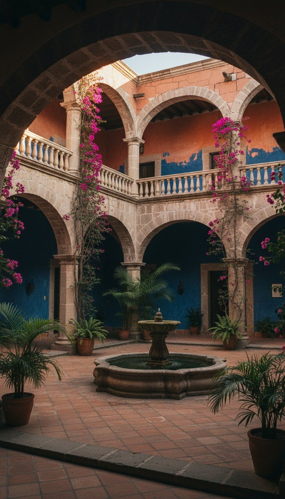
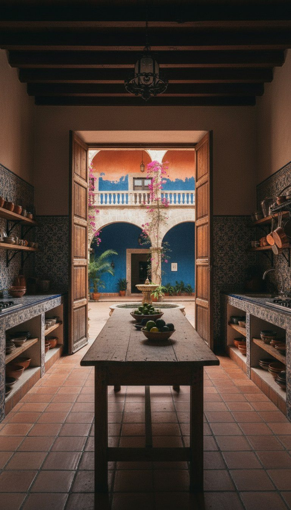

Pot de talavera COBAZUL avec drainage, bleu cobalt, moyen
Un pot mexicain en céramique peint à la main, émaillé dedans et dehors, avec trou de drainage et soucoupe.
Voir sur AmazonMaison concept générée par IA. Ni une vraie propriété ni un vrai produit. Elle n’est ni à vendre ni à louer. Les produits suggérés plus bas sont de vraies offres Amazon, choisis dans l’esprit de la maison. Les images de cette page sont générées par IA; ce ne sont pas des photos d’un lieu réel.
Levez les yeux. Il y a un carré parfait de ciel bleu profond, encadré sur les quatre côtés par le haut de vieux murs de plâtre, indigo d’un côté, terre cuite chaude de l’autre. Du bougainvillier magenta déborde des bords. De vieilles poutres de bois dépassent sous l’avant-toit. Le carré tourne lentement au-dessus de vous, debout en plein milieu.
Ce carré de ciel, c’est toute l’idée de cette maison. Tout y est tourné vers l’intérieur, vers lui.
Certains liens de cette page sont des liens d’affiliation Amazon. Nous pouvons toucher une commission, sans frais supplémentaires pour vous.
En tant que Partenaire Amazon, je réalise un bénéfice sur les achats remplissant les conditions requises.
Redescendez et sortez de sous les arcades. Vous êtes dans la cour centrale d’une maison coloniale des hauts plateaux du Mexique, comme on en trouve dans une ville perchée comme San Miguel de Allende. Deux étages d’arcades de pierre entourent un patio carré. Les murs sont en plâtre indigo profond et terre cuite chaude, avec une patine que seul le temps peut donner. Le bougainvillier magenta grimpe aux colonnes. Il y a des palmiers et des fougères en pot sur un plancher de tuiles de terre cuite.
Au centre, une fontaine ronde en pierre sculptée, avec un bassin d’eau sombre et immobile, qui murmure doucement. Le soleil miroite à sa surface. C’est là que la journée commence : le café sur le rebord de la fontaine, pendant que la ville est encore tranquille derrière les murs.

Les cours comme celle-ci sont pleines de pots peints à la main. Un seul pot de talavera bleu cobalt au pied d’une colonne, et toute la palette entre chez vous.
Un pot mexicain en céramique peint à la main, émaillé dedans et dehors, avec trou de drainage et soucoupe.
Voir sur AmazonL’arcade, c’est le corridor de la maison, ouvert d’un côté. On la longe avec les arches à sa droite, ouvertes sur la cour ensoleillée et la fontaine, et à sa gauche un mur indigo avec un banc de bois sculpté. Des lanternes de fer-blanc ajouré pendent au-dessus. Les tuiles de terre cuite usées sont fraîches sous les pieds. Quand l’après-midi devient chaud, c’est là qu’on retrouve tout le monde : à l’ombre, à quelques pas du soleil.
La cuisine, ce sont des carreaux de talavera bleus et blancs peints à la main, une longue table de bois rustique avec des bols de limes et d’avocats, des pots d’argile, des casseroles de cuivre suspendues, des tablettes ouvertes chargées de poterie et un plafond à poutres. De hautes portes doubles restent grandes ouvertes sur la cour lumineuse : la personne qui cuisine voit la fontaine, et celle qui est près de la fontaine sent le souper.
Une cuisine comme celle-là tourne autour de quelques bons outils, lourds et solides. Le molcajete, un mortier en pierre de lave avec son pilon, est le plus ancien d’entre eux, et encore la façon traditionnelle de faire un guacamole ou une salsa.

Un mortier et son pilon en pierre volcanique, faits à Puebla, au Mexique, avec un chauffe-tortillas; il faut le culotter avant le premier usage.
Voir sur Amazon
Un étroit escalier de pierre grimpe le long d’un mur indigo, entre le bougainvillier et les pots de terre cuite posés sur les marches, vers un carré de ciel du soir tout illuminé, en haut. La vidéo ralentit ici, et la musique aussi. On sent que quelque chose nous attend.
La terrasse sur le toit, au crépuscule. Un parapet bas en terre cuite, des guirlandes lumineuses et des lanternes de fer-blanc ajouré allumées, une longue table de bois garnie de chandelles et d’un chemin de table tissé, du bougainvillier en pot. Et au-delà du parapet, une mer de toits de terre cuite et de vieux dômes d’églises, les lumières de la ville qui s’allument une à une, et les montagnes derrière qui virent au rose, puis au violet.
Puis l’heure bleue. Des sofas d’extérieur avec des coussins de lin, la table aux chandelles, les lanternes et les lumières de la ville perchée qui s’étendent jusqu’aux montagnes sombres sous un ciel bleu profond.

Une lanterne de métal avec une chandelle à l’intérieur, posée sur la table ou suspendue à la pergola, c’est la lumière de cette terrasse.

Du métal ajouré au fini cuivre vieilli, autour de panneaux de verre ambré, à suspendre ou à poser sur une table. À l’extérieur, uniquement sous un abri couvert.
Voir sur AmazonLe dernier regard plonge droit vers le bas, du parapet du toit jusque dans la cour, la nuit : les arcades qui brillent à la lueur des lanternes, la fontaine sombre qui reflète leur lumière, le bougainvillier et le plancher de terre cuite. D’en haut, on dirait une pièce éclairée qui a le ciel pour plafond, et dans le fond, c’est exactement ce qu’elle est.
Des cinq maisons de la semaine, c’est peut-être celle où l’on imagine le plus facilement toute une vie : les matins près de la fontaine, les après-midi sous les arcades, les longs soupers dans la cuisine et chaque soir sur le toit, au-dessus de la ville.
Dites-nous en commentaire sous la vidéo si vous y emménageriez, et laquelle des cinq maisons de rêve de la semaine est la vôtre.
Les images de cette page ainsi que les visuels et la voix de la vidéo sont générés par IA. Il s’agit d’une maison concept, pas d’une vraie propriété.
Les produits ci-dessus sont des suggestions dans l’esprit de la maison; ils n’apparaissent pas dans la vidéo. Détails des produits : chaque fiche Amazon.com liée (en anglais), consultée le 23 novembre 2026 (America/Toronto).